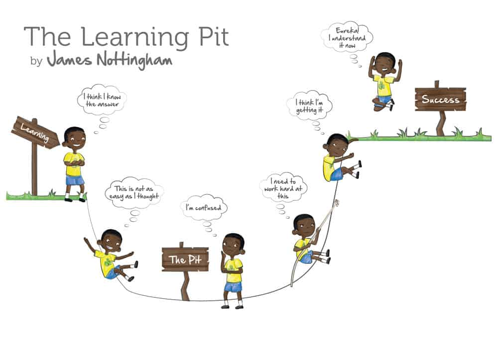

How To Use These Courses
Session types
The topics are delivered in one of three ways:
- Bootcamp
- Flipped classroom
- Online tutorial
Each type of class has a different emphasis and approach regardless of the topic under study.
Bootcamp
The bootcamp style class is an instructor led practical session. You will be expected to follow an instructor who is teaching and live coding from the front of the class. This is not a lecture where you take notes - its a computer class where you work concurrently with the instructor as they exemplify the skills you will need to learn to use. Much more like a cookery class than a university lecture, the session proceeds with the instructor demonstrating how to do a specific computer-based skill and you try it out immediately. It is very, very useful to take the opportunity to read the materials for bootcamps before the session. Learning from this style requires you to be alert and engaged with the material in the session, not least you should put effort into joining in and being part of the group. Be prepared to make mistakes and be at peace with not knowing yet and being on a journey of learning. Sitting back and hoping to catch up with it later in your own time will put you behind and waste the opportunity of the session.
Flipped classroom
The ‘flipped’ classroom style here is one in which the reading is done by the student before the session. This gives time for reflection and understanding of the concepts such that they can be applied to solve the problem sets that come up in the session. The instructor will not conduct a comprehensive overview of the materials during the session, instead they will concentrate on issues arising in the application of the concepts. If you have not done the reading before the session then you will be behind from the start of the session and you will miss out on the opportunity. Learning from this style is requires you to lead and take responsibility for the learning before class and to work to apply the theoretical knowledge in the practical session.
Online tutorial
The most traditional style of session will be the online tutorial in which you will work through an online guide with embedded quizzes and questions on a particular topic. The materials will be provided in the session. Learning from this style of session requires you to be thinking through the questions and reasoning to work out the answers with the materials provided.
Note-taking
The website of the course is connected to the online note-taking system hypothes.is. If you have an account there and are logged in you’ll be able to add highlights, notes and comments that you will see in the web page itself. You can also make and join groups to share notes.
JONK
For all learning you should embrace JONK - ‘Joy of Not Knowing’ (Staricoff 2020). Although you are at least a Post-Grad there are still a lot of things and skills to learn and you will spend a lot of time confused. This is fine. And expected, and a necessary part of learning - if it was easy you wouldn’t be learning anything. Over and over again you’ll fall into the metaphorical ‘Learning Pit’ (Nottingham 2015) and through working at a problem sincerely with a view to understanding you’ll reach real success - a good understanding of the topics you are learning about.
The dark side
Lots of people want to use data science and statistics so lots of other people publish blog posts and tutorials on those topics on the internet. A quick google will lead you to how-to’s in briefer and shallower form than this course. Be wary of taking these as an answer, although they aren’t wrong per se, the useful and particular ways of thinking about data science that this course is aimed at helping you understand are not so often developed in the quick online tutorials. They can help you with an immediate coding problem, it can take a very long time to develop broad and flexible understanding of data science through just looking stuff up on the internet and applying them until they seem to work. This dark side is quick, easy and seductive but won’t bring you a good understanding. Take your time and work through the details and you’ll emerge with a much more adaptable and applicable set of skills.
References
Nottingham, James A. 2015. Challenging Learning. Routledge.
Staricoff, Marcelo. 2020. The Joy of Not Knowing. Routledge.